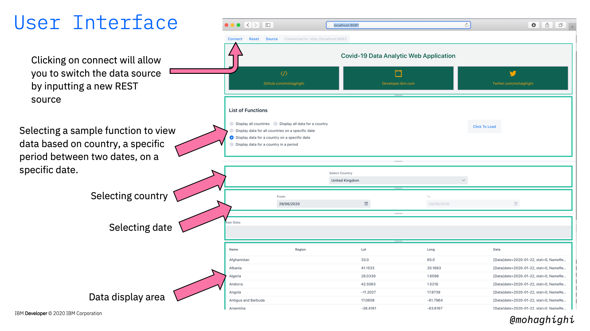
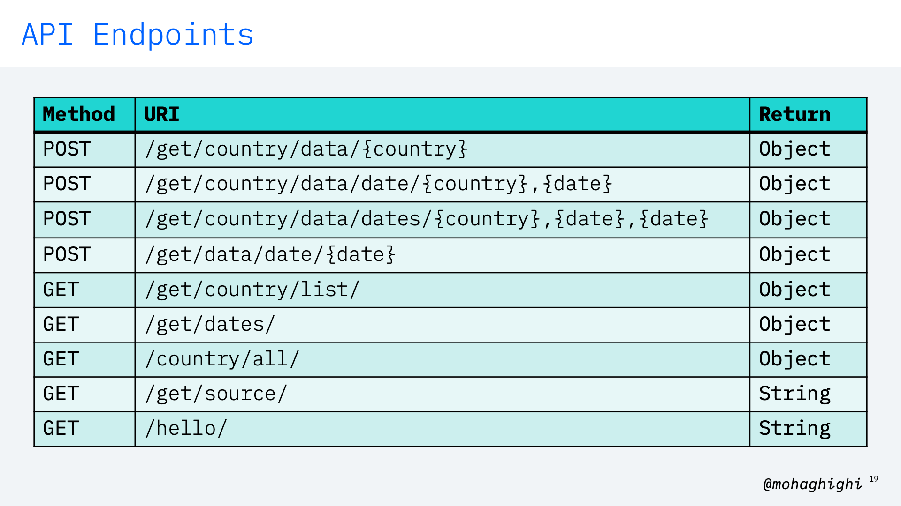
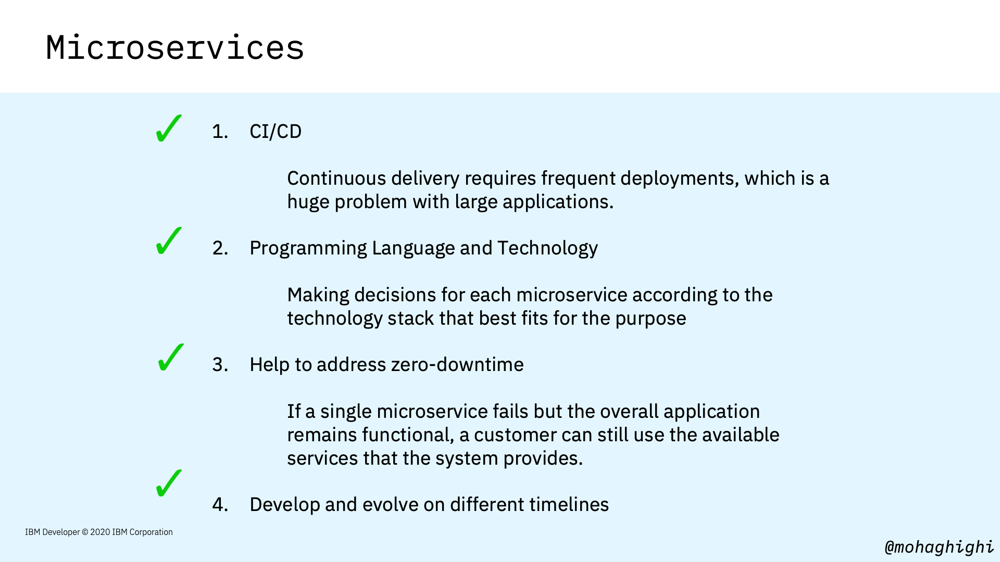
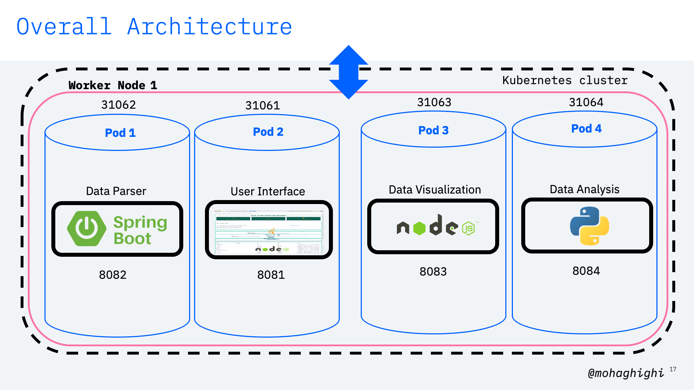

Part 1: Cloud Native Development, Microservices and the Architecture of our Covid-19 Data Parser¶

Agenda¶
In this section you will learn:
An overview of Covid-19 data analytic web application
- Quick summary
- Data source & format
- Data Parser
- REST APIs endpoints
- Microservices
- Why microservices?
- Orchestration with Kubernetes

Our application has been developed in Java and Spring Boot framework. It provides us with a number of API endpoints for retrieving covid-19 data per region, country, dates and periods. It comes with a number of containerised microservices, including 2 x data parsers for positive cases and mortality rates per country, and a User Interface for displaying data, as well as invoking those APIs through a number of sample functions.

As you can see from the slide, data is fetched from Johns Hopkins University's repo (which is an authentic source of covid-19), and is stored in our local data repository.
Here is a list of sample API endpoints as we'll test them out shortly.

Prerequisites¶
Spring Boot v2.2 - https://spring.io/guides/gs/spring-boot/
OpenJDK v11 - https://openjdk.java.net/install/
(Optional) Apache Netbeans IDE v12 - https://netbeans.apache.org/download/
Node.js v14 - https://nodejs.org/en/download/
Docker Latest - https://docs.docker.com/engine/install/
Minikube Latest - https://kubernetes.io/docs/tasks/tools/install-minikube/
CodeReady Containers - https://developers.redhat.com/products/codeready-containers
(Optional) OpenShift v4.3 on IBM Cloud - https://www.ibm.com/cloud/openshift
Note
You also need a laptop with a modern operating system (Linux, MacOS or Windows) with at least 16GB memory
Microservices¶


By the end of this series, you'll have a microservices application with 4 x containers running in your Kubernetes/OpenShift cluster.

- Data Parser written in Java.
- UI frontend written in Java to generate HTML and Node.js.
- Analytical application wrtittn in Python Flask.
- Data Visulization application written in Node.js